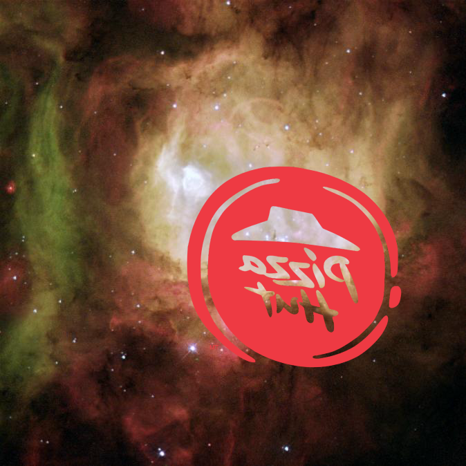
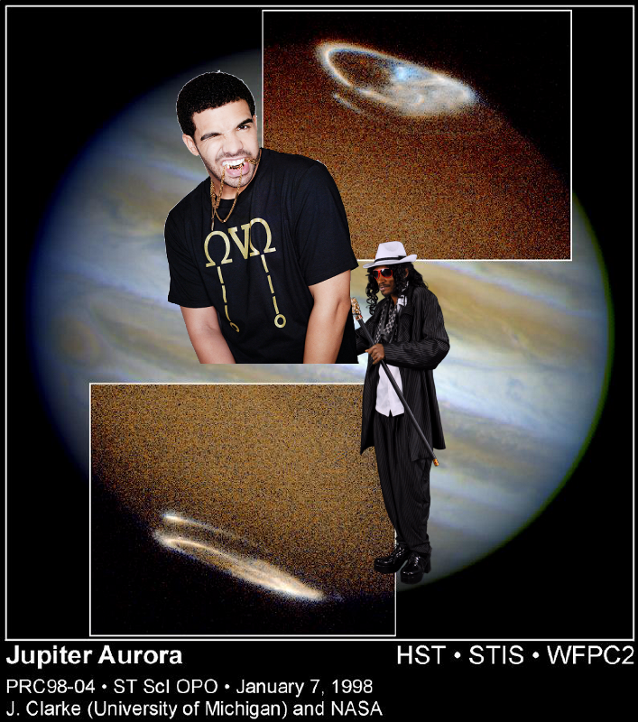
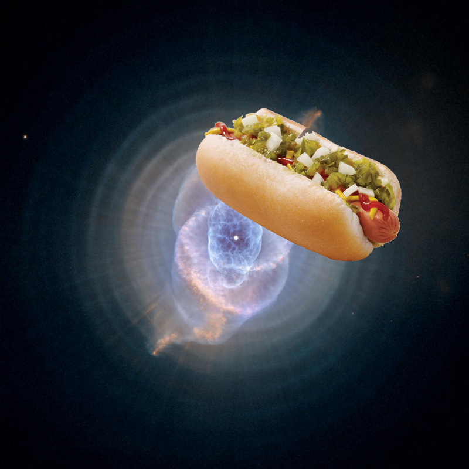
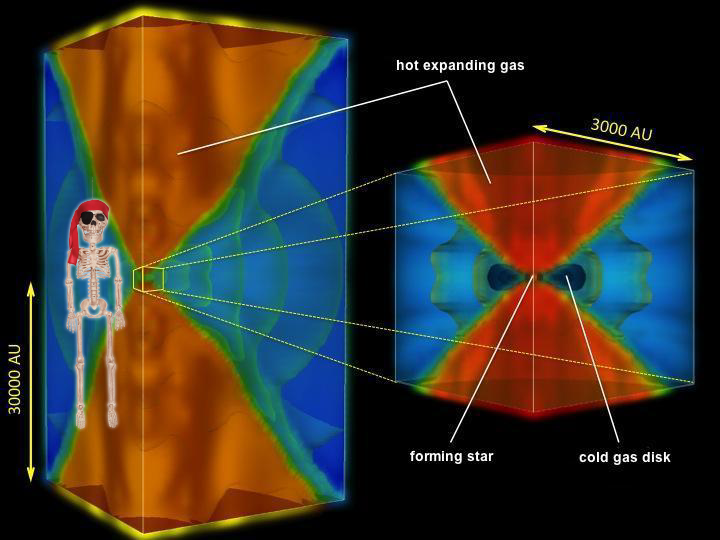
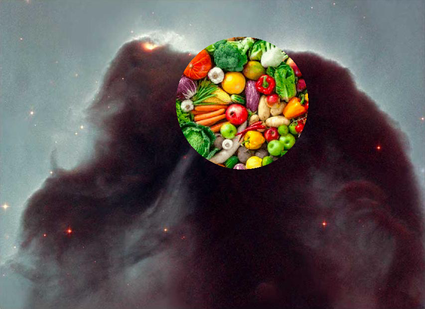
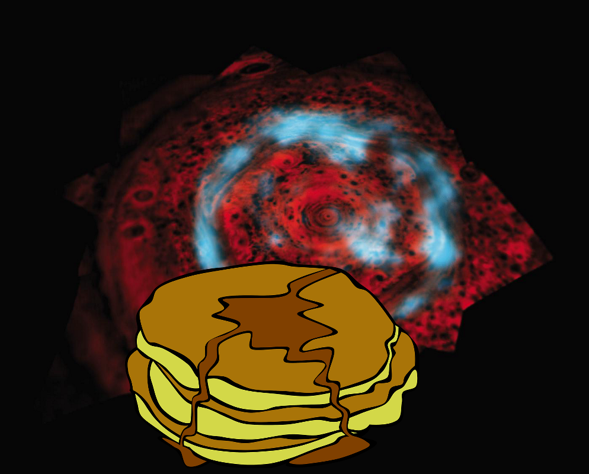
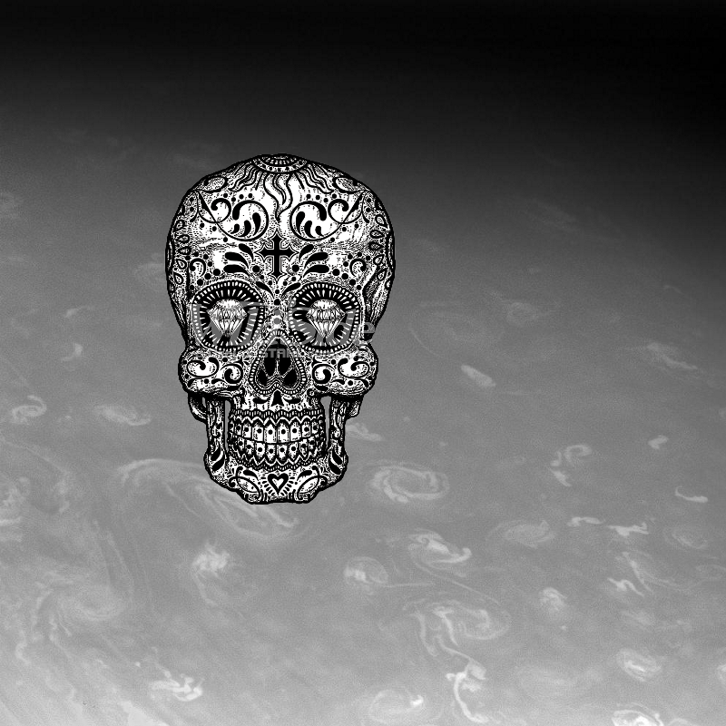
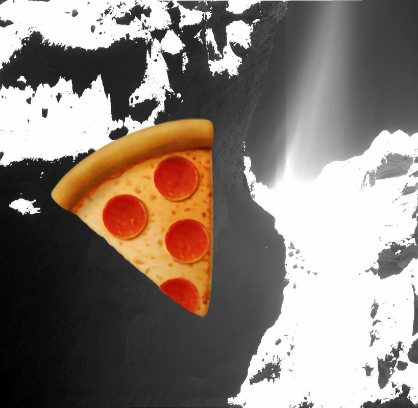
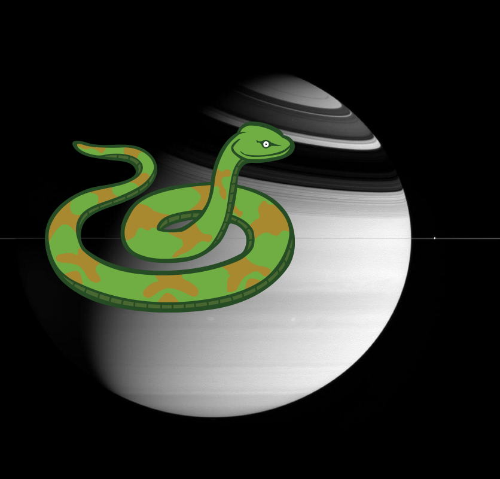

-
An Unexpected Discovery | Comet Jacques Approaches the Sun [video]
-
A Mystery | Polygon on Mars.
-
Something Strange – Titan in Natural Color.
-
Something Strange on Nereid
-
Something Strange + TRAPPIST-1 Planet Lineup - Updated Feb. 2018
-
Something Strange on A Galaxy at the Center of the Hubble Tuning Fork
-
An Unexpected Discovery @ Spirit Descent to Mars-1983
-
A Mystery + ESO 2.2-m WFI Image of the Tarantula Nebula.
-
Something Strange | Sixty for Saturn
-
An Unexpected Discovery – Bold Saturn!
-
An Unexpected Discovery + Black Hole with Wobbling Disk Artist Concept
-
An Unexpected Discovery – Inner Radiation Belts of Jupiter
-
Something Strange @ Comet ISON Approaching the Sun [still]!
-
A Mystery – The Light and Dark Sides of a Distant Planet
-
A Mystery – Wisps in Color!
-
An Unexpected Discovery – Galaxy Mission Completes Four Star-Studded Years in Space!
-
Something Strange, An Unexpected Discovery, Something Strange ; Storm of Stars in the Trifid Nebula.
-
 ??? @ Saturn Active Atmosphere
??? @ Saturn Active Atmosphere -
Something Strange | Hubble Captures Spectacular "Landscape" in the Carina Nebula!
-
Something Strange ; 360-degree Color Panorama!
-
A Mystery ; Craters and Bright Dunes of Isidis Planitia.
-
A Mystery, ??? | First Panoramic View from Comet Lander!
-
An Unexpected Discovery, Something Strange @ NASA's Hubble Space Telescope Finds Dead Stars 'Polluted with Planet Debris'
-
Something Strange – Ghost Head Nebula
-
Something Strange, An Unexpected Discovery @ Topography of Mars
-
An Unexpected Discovery @ Comet Lander View During First Bounce!
-
A Mystery – Hubble Friday - Heavy Metal Stars!
-
An Unexpected Discovery @ Jupiter Main Ring
-
An Unexpected Discovery @ A New View of Saturn.
-
A Mystery, An Unexpected Discovery – F Ring Channels.
-
A Mystery, Something Strange, Something Strange @ Surface Texture
-
A Mystery, An Unexpected Discovery on Hubble Provides Complete View of Jupiter Auroras
-
 An Unexpected Discovery | Planetary Nebula
An Unexpected Discovery | Planetary Nebula -
A Mystery @ Cat's Eye Nebula
-
 Something Strange – Rosetta Comet Fires Its Jets.
Something Strange – Rosetta Comet Fires Its Jets. -
 An Unexpected Discovery ; Hubble View of a Galaxy Resembling an Atomic Nucleus.
An Unexpected Discovery ; Hubble View of a Galaxy Resembling an Atomic Nucleus. -
An Unexpected Discovery @ Cooking up the First Stars
-
 Something Strange ; The Solar Storm, at Mercury.
Something Strange ; The Solar Storm, at Mercury. -
Something Strange @ Horsehead Nebula!
-
A Mystery – Saturn Polar Aurora!
-
??? – Saturn Gets in the Way.
-
An Unexpected Discovery @ Rosetta Comet Spreads its Jets
-
A Mystery + Serenity of Saturn.
-
 Something Strange + Apollinaris Patera, Mars
Something Strange + Apollinaris Patera, Mars -
 Something Strange – Hubble Catches a Galaxy Duo by the "Hare".
Something Strange – Hubble Catches a Galaxy Duo by the "Hare".